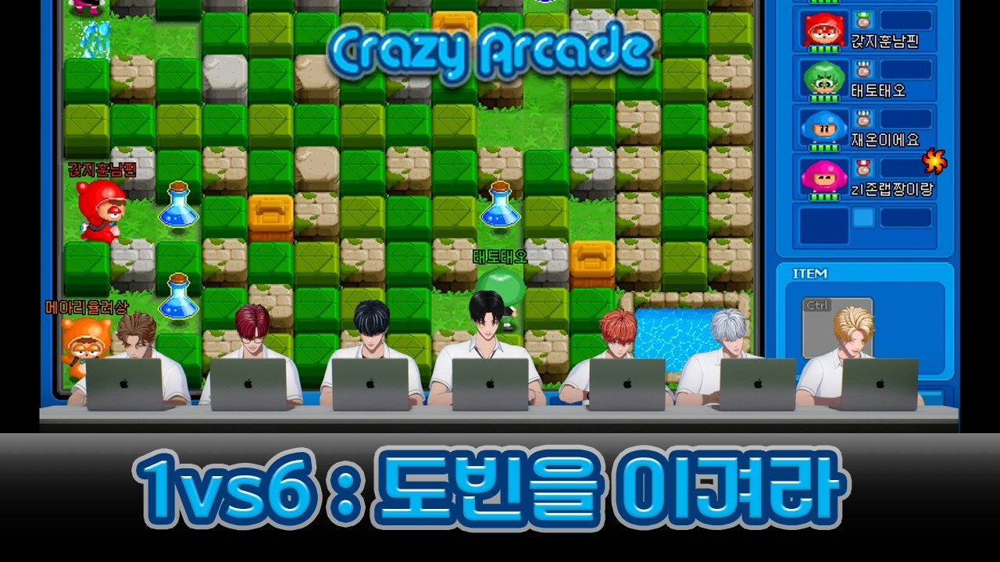

SKINZ分類：YOUTUBE · 直播日期：2026-08-10今天的目標是 Dovin｜爆爆王SKINZ 字幕最後更新：2026-10-08在 YouTube 觀看原始影片×載入 YouTube 播放器 1010速度 0.75×1×1.25×1.5×2×00:00 / --:-- 繁中韓文雙語字幕大小20%字幕位置 原先位置懸浮字幕全螢幕劇院模式字幕外觀字幕樣式白字／黑底黑字／白底黃字／黑底白字描邊／無底底色透明度25%字幕高度2%恢復預設繁體中文點播放後，字幕會顯示在這裡韓文 分享這篇@fLINE𝕏 影片翻譯評分☆☆☆☆☆選擇 1～5 星展開雙語逐字稿 點擊查看完整內容雙語逐字稿雙語韓文繁中 自動跟隨播放文字大小 A−A＋重設字幕偏移（秒） 字幕比聲音早出現時填正數00:00:02여러분 안녕하세요. 스킨즈의 도빈입니다. 여러분들도 아시다시피大家好 我是 SKINZ 的 Dovin 大家也知道00:00:05제가 요즘에 게임만 하면 이겨요. 지질 않습니다. 패배를 모르는 남자我最近只要玩遊戲就會贏 從來不輸 不知道什麼叫輸的男人00:00:10도빈. 오늘 그 패배를 모르는 남자 도빈을 꺾기 위한 귀여운 친구들이Dovin 今天有幾位可愛的朋友 要來打敗這個不知道什麼叫輸的男人 Dovin00:00:15준비되어 있는데요. 과연 누군지 한번 보시죠.已經準備好了 到底是誰呢? 一起看看吧00:00:18- 형의 기세를 꺾으러 왔다. - 형의 기세를 꺾으러 왔다. 이기고- 我來打壓哥的氣焰了 - 我來打壓哥的氣焰了 一定要贏00:00:22- 말 테다. - 지옥에서 누가 돌아왔게.- 一定要贏 - 猜猜誰從地獄回來了00:00:27자, 오늘 저희가 준비한 게임은 곧 있으면은 서비스 종료를 하는今天準備的遊戲是再過不久 就要結束營運的00:00:31- 게임입니다. - 맞아요.- 遊戲 - 對啊00:00:31아, 그래요? 정말 국민 게임이고 추억의 게임이죠.啊 是嗎? 這可是全民遊戲 也是充滿回憶的遊戲啊00:00:35- 그렇습니다. 바로 크레이지 아케이드. - 와, so크.- 沒錯 就是爆爆王 - 哇00:00:40근데 일단은 저희가 일대일로 도장 깨기를 하는게 낫지 않을까 싶습니다.不過我們先一對一 輪流挑戰 應該比較好吧00:00:44자, 첫 번째로 누가 먼저 도전해 볼까요?誰要第一個來挑戰呢?00:00:46- 자신 있는 분. - 그 못 하는 사람부터 올라갈까? 좀- 有信心的人 - 從不擅長的人開始往上挑戰吧? 我有點00:00:49- 자신이 없어. 솔직히. - 전 진짜 자신 없습니다. 양쪽 끝부터- 沒信心 老實說 - 我完全沒信心 從兩邊各00:00:52한 명씩 할까요? 어 그러면은 자 지금 레벨원입니다. 도빈 씨.一個人開始吧? 那現在是第 1 級 Dovin00:00:57근데 만약에 여기서 다엘 형이 이겨 버리면 어떻게 되는 거죠?可是如果 Dael 哥在這裡就贏了 會怎麼樣呢?00:01:00- 그럴 수도 있죠. - 사실 오늘 제가 또 말씀드린 게 제가 지면 이- 也有可能啊 - 今天也跟大家說了 我一輸00:01:04- 콘텐츠는 끝납니다. - 아 오늘 영상 2분 30초에서 3분- 這個企劃就結束 - 我預測今天的影片會是 2 分 30 秒到 3 分00:01:07- 30초 예상합니다. - 아 뭐야 나도 도빈 형 콘텐츠에 더 나오고 싶어.- 30 秒 - 什麼啦? 我也想多出現在 Dovin 哥的企劃裡00:01:11좋은데요.不錯耶00:01:13여러분 일단은 첫 번째 도전자各位 首先第一位挑戰者00:01:16- 레벨원입니다.네 - 유리 자리에서 해보도록 하겠습니다.- 是第 1 級 - 好 我在 Yull 的位子上挑戰00:01:19- 빌릴게. - 네- 借一下喔 - 好00:01:20너의 기운을 좀 받을게. 와借我一點你的力量 哇00:01:23- 와 - 박스 밀 수 있거든- 哇 - 可以推箱子喔00:01:25아 좀 아네요.啊 你滿懂的耶00:01:28- 좀 알지 - 저 독은 뭐야- 我懂啊 - 那個毒是什麼?00:01:30길어지는 거기 엄청 길어져 달리기 너무 빨라 저기會變長 那個會變很長 跑得好快 那個00:01:34위에 타고 다니는 거 그지 저거 저거 그래 그래可以騎在上面的 對吧? 那個 那個 對 對00:01:36어 어 아 바로 끝나버렸어요喔 喔 啊 馬上就結束了00:01:39자 이렇게 이제 연습 게임을 한번 하고好 就這樣先玩一場練習賽00:01:41자 도전을 안 외쳤네.我們還沒喊挑戰耶00:01:43아 도전 안 했. 도전 안 외쳤네.啊 還沒喊挑戰 還沒喊挑戰啦00:01:45자 이제 뭐 제대로 한번 해 볼게요 도전現在認真玩一次 挑戰00:01:48- 너무 금방 - 자 도전입니다. 도전 시작합니다.- 太快了 - 好 挑戰 挑戰開始00:01:50네. 근데 다엘 형 진짜 이겨 주셔야 돼요.是 可是 Dael 哥 你一定要贏喔00:01:53- 네. - 도빈 형 잡으면 게임 끝나요. 아니- 好 - 打敗 Dovin 哥 遊戲就結束了 不是00:01:56- 퇴근이에요. - 바늘 바늘- 是下班了 - 針 針00:01:57- 바늘 하나 먹었고. - 나이스 나이스.- 吃到一根針了 - 漂亮 漂亮00:01:59퇴근 하고 싶어. 안 하고 싶어? 어떻게 얘들아? 하고 싶어? 안 하고想不想下班? 怎麼樣 大家? 想不想00:02:01- 싶어? - 무조건 이겨야지.- 下班? - 一定要贏啊00:02:02- 하고 싶어. 안 하고 싶어. - 다엘 형 파이팅. 다엘 형 파이팅.- 想不想下班? - Dael 哥加油 Dael 哥加油00:02:06어 여기 갇히면 끝납니다. 아 위험한데.被困在這裡就完了 啊 好危險00:02:09아 저거 먹으러 가지 말고 가뒀으면 됐는데요.不要去吃那個 把他困住就好了00:02:13지금 지금 굉장히 지금現在 現在很00:02:16- 더 빠르지. 더 빠르네. - 엄청 빠른데. 아 끝났습니다.- 更快 更快 超快的 - 啊 結束了00:02:21- 어 뭐야? - 아 잠깐만 저 저거 쓰면 안 되는데- 什麼? - 等一下 不能用那個吧00:02:23- 실드가 있네요. - 나도 저 캐릭터하지.- 有護盾耶 - 那我也要用那個角色00:02:25- 나이든 사람들이 확실히 잘하네요. - 오 뭐야- 年紀大的人果然比較會玩 - 喔 什麼?00:02:29- 있다. 와 이거 뭐야 합니다. - 아 근데 앞으로 판수 많이 남았으니까- 有耶 哇 這是什麼? - 可是後面還有很多場嘛00:02:34- 아 바늘이 있으신데 - 아 근데 이거 이러면 안 되잖아.- 啊 你有針耶 - 可是這樣不行吧00:02:38그러면 두 번째로 게임을 못 하는 제가 한번 해보겠습니다. 다那就由第二個最不會玩遊戲的我 來試試看00:02:41다장착했는데 뭐야? 응. 와全都裝備好了耶 什麼? 哇00:02:47이거 이거 지금 말이 됩니까 여러분들?這樣合理嗎 各位?00:02:50- 뭐 끝판왕 보스야? - 내가 두 번이나 죽였는데.- 你是最終魔王嗎? - 我都殺死你兩次了00:02:52- 빼요 그냥 - 일단 다 빼야 돼.- 直接拿掉吧 - 先全部拿掉00:02:55- 자 저 갑니다 우리. - 자 이번에 태오 형 차례입니다.- 我要來了 - 這次輪到 Theo 哥00:02:59- 야 이거 귀신 나오는 맵이다. - 어 뭐야?- 這是會出現鬼的地圖 - 什麼?00:03:01어 깜짝이야. 와 들어갔네. 끝났다.嚇我一跳 哇 進去了 結束了00:03:04어喔00:03:11아무리 퇴근을 하고 싶어도 이래도 되냐고.就算再想下班 也不能這樣吧00:03:14아니 근데 이거는 제가 이길 수가 없었어요.可是這個我根本贏不了00:03:15왜 왜 왜요? 방 방 방금 저為什麼 為什麼? 剛剛那個00:03:17예. 방금 저 판에서 제가 할 수對 剛剛那一場我根本沒什麼能00:03:19있는 게 없어.做的00:03:20그러니까 캐릭터를 그 오리지널 캐릭으로 바꿔야 될 거 오리지널所以應該把角色換成原本的角色 原本的00:03:24맵이어야 되는데 그럼 그냥 기본 캐릭터로 하시죠.地圖才對 那就用基本角色吧00:03:26- 좋아요. 배찌는 속도가 빨라요. - 도빈 형 지금- 好 睏寶速度很快 - Dovin 哥現在00:03:30- 선글라스 쓰고 있는데요. 반칙. - 어 그렇네. 이거는 아무 그게- 戴著墨鏡耶 犯規 - 對耶 這個沒有什麼00:03:33없던데요. 도전. 물줄기가 나오네요. 아 안效果耶 挑戰 有水柱出來耶00:03:38나오네. 오 좋다. 야 좋다 좋다. 우주선啊 沒有耶 不錯 不錯 不錯 飛碟00:03:40우와 좋은 우주선이다.哇 很好的飛碟00:03:43이거는 상자 다 넘을 수 있어. 지금 죽여야 돼.這可以越過所有箱子 現在要殺掉他00:03:45- 근데 없어. 내가 그 물풍선이 하나가 - 대신 아이템을 못 먹었어. 어 지금- 可是我沒有 我只有一顆水球 - 可是他不能吃道具 現在00:03:48가둬. 여기 나 물풍선 나. 물풍선 나.困住他 這裡 水球 水球00:03:52아이고 똥차 걸렸다.哎唷 拿到爛車了00:03:56어 나 가두려 했지. 내가 모를 줄.你想困住我吧? 以為我不知道嗎?00:04:01와 진짜 못한다. 아 내가 할게요.哇 好不會玩 我來吧00:04:04근데 진짜 안 해봤네. 자 근데 잠깐만 우리 전략을 좀可是我沒玩過 等一下 我們先想想00:04:07짜보자. 전략을 자기 좀 잘한다 하는 사람策略 策略 覺得自己玩得不錯的人00:04:10저는 솔직히 이길 자신이 완전히 있어요.老實說 我完全有信心能贏00:04:12- 그럼 네가 마지막에 하자. - 제가 다음에 할게요. 진짜 못해요.- 那你最後再上 - 我接著玩 我很不會玩00:04:15이랑이부터 자 선글라스 빼 주시고요. 자 이번에從 Ilang 開始 請先把墨鏡拿掉 這次00:04:19이랑 권 차례입니다. 오케이.輪到 Ilang Kwon 好00:04:24마주칠 날이 왔습니다. 둘이 만난다.終於到了交手的日子 兩人碰面了00:04:26- 일부러 저런 아슬아슬한 상황을 - 연출하시는 건가? 와 이제 다들 엄청- 你是故意製造這種驚險的情況嗎? - 哇 現在大家都變很00:04:31세졌어. 아 어 아強了 啊 啊00:04:36아 이거 없네. 와 진짜沒有這個耶 哇 真的00:04:40- 도빈 못한다더니. 자 - 해볼게요.- 不是說 Dovin 不會玩嗎? - 我來試試看00:04:43- 재온아 너 잘해? - 아니요.- Jaon 你很會玩嗎? - 沒有00:04:46재온 형 차례입니다. 자 스페이스 바가 물풍선.輪到 Jaon 哥 空白鍵是放水球00:04:51바늘 바늘 오다 일단 좋다. 오針 針 喔 先這樣 不錯 喔00:04:54어어 근데 부엉이야. 오喔喔 可是是貓頭鷹耶 喔00:04:57아 터트려 터트려 컨트롤 컨트롤 컨트롤 컨트롤戳破 戳破 Ctrl Ctrl Ctrl Ctrl00:04:59- 저 귀신 먹어 일단 그리고 도망가. - 아 지금 저희 화면에 지금 재온이 안- 先吃那個鬼 然後快逃 - 現在我們的畫面上看不到 Jaon00:05:03보여요 아 재온이 근데 겁 먹어서 그냥 폭탄了 可是 Jaon 嚇到只顧著放水球00:05:06놓고 보는게 너무 웃기다. 어 끝났다 끝났다.也太好笑 結束了 結束了00:05:08그리고 오른쪽으로 바로 내려가자 어然後直接往右邊下去00:05:11됐다 됐다. 저기 있었어요.好了 好了 在那裡喔00:05:13와 왜 이렇게 빠르세요?哇 怎麼這麼快?00:05:16와 근데 진짜 이거 긴장감 넘치네. 와 이거 근데 진짜 한 번 죽으면好有緊張感 可是這個死一次 就00:05:20- 끝이니까. - 그리고 저 콘 밀 수 있다. 네.- 結束了 那個交通錐也可以推喔 - 好00:05:23아, 근데 잘한다. 이형 게임 진짜 잘하겠다.可是玩得不錯耶 這個哥很會玩遊戲00:05:28드로우야 드로우. 한 번 더 해야平手 平手 要再玩一次00:05:30한 번 더 해야죠. 해야죠. 아 동점입니다.要再玩一次 再玩一次 啊 平手了00:05:34드로우. 자 양 팀 선수 악수 한번 하고 다시平手 好 雙方選手先握手 再重新00:05:37시작하겠습니다. 어, 대단한 경기예요.開始 這是很精彩的比賽啊00:05:45어, 박스 밀리는 거. 오, 재온이 센스 있는데.可以推箱子 喔 Jaon 很有判斷力耶00:05:49야 근데 너 삶을 즐길 줄 안다.你很懂得享受人生耶00:05:53그렇지. 이게 이길 수 있을 것 같은데.對啊 這感覺能贏耶00:05:55어 재온아 너 가능성 있다잉.Jaon 你很有機會喔00:05:58거북이. 와 거북이.烏龜 哇 烏龜00:06:02바늘 바늘 바늘. 오, 바늘이다.針 針 針 喔 是針00:06:04- 재온아, 진짜 이거 신중하게 보자. - 네.- Jaon 這個要謹慎一點 - 好00:06:06- 진짜 이거는 고수들이 하는 거야. - 근데 재온이 잘해요, 지금.- 這是高手的玩法 - 可是 Jaon 現在玩得很好00:06:11어 내렸다. 죽일 기회야. 죽일 수 있는下來了 這是殺掉他的機會 可以殺掉他的00:06:14기회야. 근데 서로 두 개 바늘이 있어요. 둘機會 可是兩邊都有針 兩個人00:06:16다. 아, 바늘.都有 啊 針00:06:17바늘 바늘지. 그렇지. 도빈 형도 바늘이 있거든.針 針 對 Dovin 哥也有針00:06:21근데 물풍선을 사실 많이 놓는다고 좋은 게 아니야.可是水球不是放得越多就越好00:06:23그렇네. 아이고야. 아쉽네요.對耶 哎唷 可惜了00:06:27렛츠고. 핀형입니다.走吧 輪到 Finn 哥00:06:29근데이 맵이 재밌다. 아 이거는 참.這張地圖好玩 啊 這個真是00:06:34- 아 너무 시시한데요. - 와 이거 레벨 5가 맞아?- 太沒意思了吧 - 哇 這真的是第 5 級嗎?00:06:38- 율이 하세요. 전 율이. - 전가요? 벌써 다 죽었어요?- Yull 來吧 我是 Yull - 輪到我了嗎? 大家都死了?00:06:41네네. 아 진짜. 자 이제 보여드리도록 하겠습니다.對對 啊 真的 現在我來展現一下00:06:47너 이래놓고지면 안 된다. 어你都這樣說了 可不能輸喔00:06:50진짜 놀림당한다. 도빈 형 집중한다. 허리 폈다.會被笑喔 Dovin 哥認真了 腰挺直了00:06:54어 이거 되게 일찍부터 이런 그림이 나오네요.這麼快就出現這種畫面了呢00:06:57근데 저는 느꼈어요. 어 뭐야? 어, 끝났다.可是我感覺到了 什麼? 結束了00:06:59아이고. 아,哎唷 啊00:07:02어 율이. 아니 근데 혹시 저에게 기회를Yull 不是 可以再給我一次機會00:07:05- 한번 더 주실 생각이 있으세요? - 오세요.- 嗎? - 來吧00:07:07왜냐면 아까 그 아이템으로 두 번 살아났기 때문에因為剛剛靠那個道具活過來兩次00:07:09- 아니 뭐 잘한다면서 나랑 동등하잖아. - 미안해.- 你不是說很會玩 結果跟我差不多嘛 - 對不起00:07:13아, 이거 잘한다면서 뭐야?啊 這個 不是說很會玩嗎? 怎麼回事?00:07:15- 너무 시시하게 죽어버렸는데요. - 배찌가 빨라. 빠른 게 좋아요. 일단- 死得太乾脆了吧 - 睏寶速度快 快一點比較好 首先00:07:20처음에 그 제가 지금 이거 효율이 있어요.我現在這樣是有效率的喔00:07:23- 아, 계획이 있으시군요. - 이것도 계획인가요?- 啊 你有計畫啊 - 這也是計畫嗎?00:07:26자. 아 아好 啊 啊00:07:28계획적이다. 아쉽습니다. 진짜很有計畫呢 可惜了 真的00:07:31아니 방금판이 방금판이 1단계 같아요.剛剛那一場 剛剛那場像第 1 級耶00:07:34아니나 근데 그게 나 방금 아이템 되게 잘 먹었는데 근데 이거 제가不是 我可是 我剛剛很會吃道具耶 可是我00:07:37- 느꼈어요. 진짜 못 이기네. - 신이 도빈이를 지금 가호하고 있어.- 感覺到了 贏不了耶 - 神現在保佑著 Dovin00:07:41이거는 가오 좀 빼세요 형. 아這個 哥 少耍帥一點吧00:07:43오케이. 단체전을 해 볼까 그냥.好 不然直接玩團體戰吧?00:07:45아 그것도 한번 하시죠.也來玩玩看吧00:07:46어 좋다. 그게 나을 수 있어.好啊 這樣可能比較好00:07:48응. 그러니까 이건 그거잖아요. 약간所以這個就是 雖然算是00:07:50개인전이지만 진짜 이렇게 해도 도빈 형이 이기는지 보는個人賽 但要看看這樣玩 Dovin 哥是不是也會贏00:07:54그죠. 개인전이지만 뜻은 같죠. 네. 네.對 雖然是個人賽 但我們的目標一樣 是00:07:56보겠습니다. 자, 일단 일곱 명 개인으로 진행하고來看看吧 先進行七人的個人賽00:07:59- 우리의 목표는 도빈입니다. - 네.- 我們的目標是 Dovin - 好00:08:02네. 보라 보라색만 보라색.好 紫色 只盯紫色00:08:04- 나 어디 있어? - 자, 우리끼린 약간 동맹.- 我在哪裡? - 我們彼此算是同盟00:08:05나 어디 있어? 여기 있다. 어, 나 근데 되게我在哪裡? 在這裡 可是我很00:08:07- 나 죽었어요. - 와 되게 좋은 위치.- 我死了 - 哇 位置很好00:08:11그래도 좋을 수 있어 혹시. 아,也可能不錯 啊00:08:13너무 불쌍해 보여. 어떡해? 우리끼리 싸우면 안 되지. 핀 형.看起來好可憐 怎麼辦? 我們不能自己人打自己人啊 Finn 哥00:08:16- 아, 잠깐만. 쏘리 쏘리. - 뭐야? 안 죽은 거였네. 와, 죽였다- 等一下 抱歉 抱歉 - 什麼? 原來還沒死 哇 殺掉了00:08:21- 야, 죽여줘. 빨리 죽여줘 죽여줘. - 또 이렇게 단체로 덤비니까 별거- 殺掉他 快殺掉他 殺掉他 - 大家一起圍攻就沒什麼00:08:28- 없네요. - 여기서 이거 은근히 자존심 싸움이야.- 了嘛 - 這其實也是自尊心之戰00:08:31재밌네. 오好玩耶 喔00:08:33- 저는 간지 훈남 - 오 뭐야 나- 我是潮男帥哥 - 喔 什麼 我00:08:36간지 훈남핀이 1등한다고 예상합니다. 와 말我預測潮男帥哥 Finn 會拿第 1 名 哇00:08:43와 거기에 물풍선이. 핀아 너 재능 있어.哇 那裡有水球 Finn 你有天分耶00:08:46- 감사합니다 - 너 재능 있어- 謝謝 - 你有天分00:08:48- 감사합니다 형 - 와 근데 이게 단체로 하니까 빨리- 謝謝哥 - 大家一起玩就很快00:08:50끝나 아 근데 재밌으니까 한 번 더結束耶 可是很好玩 再玩一次00:08:51- 할까요? - 아 좋습니다.- 吧? - 好啊00:08:52한 판만 더 할까요? 이거 재밌네. 아 우리 그리고 도전을 안 외쳤네.再玩一場吧? 這好玩耶 我們剛剛也沒喊挑戰耶00:08:56- 목표는 도빈. - 도전. 목표는 도빈.- 目標是 Dovin 挑戰 - 目標是 Dovin00:08:59하나 둘 셋. 도전!1 2 3 挑戰!00:09:02아 제대로 할게요. 저도.我也要認真玩了00:09:04처음에는 우리끼리 싸우지 맙시다. 아, 도빈 형이랑 벌써 만나는데요.一開始我們不要互打 我已經遇到 Dovin 哥了耶00:09:08- 도빈 형 어디 있어? - 지금 나랑 있어. 반대로가 돼버렸어.- Dovin 哥在哪裡? - 現在跟我在一起 變成反過來了00:09:11아. 아. 어.啊 啊 喔00:09:14아 권이랑. 아 근데 어.啊 Ilang Kwon 可是 喔00:09:18- 내가 잡았다. - 아니, 아직 안 끝났어. 아직 안- 我抓到了 - 不是 還沒結束 還沒00:09:20끝났어. 맞네, 맞네, 맞네. 안돼.結束 對 對 對 不行00:09:24권이랑Ilang Kwon00:09:25아 도빈 이미 죽었어.啊 Dovin 已經死了00:09:27제가 죽였어요. 도빈 죽였어요. 제가是我殺的 我殺掉 Dovin 了 我00:09:30오케이. 와好 哇00:09:37끝났습니다. 별건 없다는 걸 알게 되었습니다.結束了 我發現也沒什麼了不起的嘛00:09:40별거 없다는 걸.沒什麼了不起的00:09:41아 근데 7대 1은 쉽지 않네요. 모두가 나를 노리는可是七對一很難耶 每個人都想抓我00:09:44그러면 마지막으로 저희가 지금 목표를 도빈 형으로만 하고 잡았잖아요. 진짜那最後 我們剛剛只把 Dovin 哥 當作目標 抓到他了嘛 真正00:09:49개인전으로 우리가 누가 제일 잘하는지 한번 해 볼까요?來一場個人賽 看誰最厲害 怎麼樣?00:09:51- 진짜 개인전. - 네.- 真正的個人賽 - 好00:09:53진짜 개인전. 나 이거 진짜 집중하. 과연 누가 제일 잘하는지 한번 승부를真正的個人賽 我要認真了 來分出勝負 看看誰最00:09:57- 가려보도록 하겠습니다. - 저도 그래요.- 厲害 - 我也是00:09:59- 진짜 개인전. - 오 나 좋은 자리.- 真正的個人賽 - 我的位置很好00:10:01이게 약간 PC의 차이가 있는 거 같아요. 지금 핀이랑 아직 만나기가感覺電腦也有差耶 現在還不想碰到 Finn00:10:04- 싫어. 오 나 좋다. - 도빈 형. 아 까비.- 呢 - 我這裡不錯 Dovin 哥 啊 可惜00:10:06- 천천히 만나죠. 천천히. - 나이스. 이랑 형 죽여버렸고요.- 晚點再碰面 晚點 - 漂亮 殺掉 Ilang 哥了00:10:10- 태오 형도 죽여버렸고요. - 아니 하- Theo 哥也殺掉了 - 不是 啊00:10:13아 율이 템이 좀 잘 나왔구나. 엄청 잘 나왔어.Yull 吃到的道具不錯耶 非常不錯00:10:15오케이. 죽여버렸고. 아니네. 저 아이템 하.好 殺掉了 啊 沒有 那個道具00:10:18- 아 나도 죽었네. 와. - 재온아 야 잠깐만 여기서 지면- 我也死了 哇 - Jaon 等一下 在這裡輸了就00:10:23큰일이야 어 근데 재온 님- 糟了 - 可是 Jaon00:10:26저 왼쪽에 저 신발부터. 재온아 진짜 우리 다 놓고 지금 또先拿左邊那個鞋子 Jaon 真的 我們都放下了 現在不能又00:10:30- 이런 그림 나오면 안 된다. - 할 수 있다. 그렇지 거기도 가도- 出現這種畫面 你可以的 - 對 那邊也能過去00:10:34거기도 가도 거기도 물풍선이 하나예요.那邊也能過去 那邊只有一顆水球00:10:36- 물풍선이 하나예요. - 이게 두 개예요.- 只有一顆水球 - 這有兩顆00:10:38야 근데 그 길이가 좀 길다 그래도 해볼 만한 거 같아可是爆炸範圍很長 不過應該可以一拚00:10:41해볼만해 볼만해 길이가 엄청 길네可以一拚 可以一拚 爆炸範圍超長00:10:44어 와 와 와 뭐 와喔 哇 哇 哇 什麼 哇00:10:46안 돼 저거 먹어야 되는데. 재온아 약간 전략을 제풀에不行 要吃那個 Jaon 策略就是讓他自己00:10:50- 넘어지도록 그런 식으로. - 아 말 말 시키면 안 돼 말 시키면- 出錯 像這樣 - 不能 不能跟他說話 不能00:10:53안 돼 말시키면 안 돼 난 너가 이겼으면 좋겠어跟他說話 不要跟他說話 我希望你能贏00:10:57- 나도 - 난 너가 이겼으면 좋겠어- 我也是 - 我希望你能贏00:10:58- 무너뜨려 저자를. - 어 재온아 저건 진짜 먹어야 된다.- 打倒那傢伙 - Jaon 那個一定要吃00:11:02아니잖아. 재온이 점점 늘고 있어 잘한다 늘고不是啊 Jaon 越來越厲害了 越來越00:11:05있어 잘한다 잘한다厲害 玩得好 玩得好00:11:08- 이거 끝나나요? - 네가 받았던 서러움을 생각해.- 這會結束嗎? - 想想你受到的委屈00:11:10- 재온아 저기 저기 아이템 떨어졌다. - 저 못 먹어.- Jaon 那裡 那裡掉了道具 - 吃不到那個00:11:12- 못 먹었네요 죄송합니다. - 20초 남았어 우리의 복수를 해줘.- 沒吃到 對不起 - 剩 20 秒 替我們報仇00:11:16자 이제 진짜 마음이 급해졌습니다.現在真的急了00:11:22야, 이게 근데 이게 뭐야? 여러분 잠깐 보실래요? 도빈 형만可是這到底是怎樣? 大家看一下好不好? 只有 Dovin 哥00:11:26은메달이에요, 지금? 아, 진짜 결국엔 이렇게 되네.是銀牌耶? 啊 真的 最後還是變這樣00:11:30이게 어쩔 수가 없나 보다. 그래서 우리 리더인가 봐. 받아들이자.看來也沒辦法 所以他才是我們的隊長吧 接受吧00:11:34받아들일게요. 어. 아,我接受 啊00:11:36기분 진짜 착잡하네요. 결국 도빈.心情好複雜 結果還是 Dovin00:11:40근데 사실 오늘 콘텐츠 제목이 그 도빈이를 이겨라가 아니에요.可是其實今天企劃的名稱不是打敗 Dovin00:11:44- 그러면요. - 리더 도빈 기살려 주기.- 那是什麼? - 讓隊長 Dovin 找回氣勢00:11:48저희가 사실 연기가 좀 서툴러 가지고 못하는 척을 하는 게 좀其實我們演技比較差 裝作不會玩的演技00:11:52서툴렀는데. 못하는 척하기 너무 힘들다. 도빈이가 눈치를 채지 못해서比較差 裝作不會玩太難了 Dovin 沒有察覺00:11:56- 저희가 미션을 - 성공한 거 같습니다. 성공- 所以我們應該完成任務了 - 成功00:11:59- 성공 - 미션 성공- 成功 - 任務成功00:12:00아무튼 오늘 또 이렇게 증명을 본의 아니게 해버렸네요.總之今天又不小心證明了自己的實力00:12:06아 아쉽습니다.啊 可惜了00:12:08다음에는 제가 도빈이를 좀 몰래 지켜보면서 가장 못하는 게임을 다시下次我會偷偷觀察 Dovin 再帶他最不擅長的遊戲00:12:12한번 들고 와보도록 하겠습니다. 다음번에 다른 걸로 한번來玩 下次換其他遊戲00:12:15- 우리가 도빈이를 이기는 그날까지. - 스킨즈의 도전은 계속된다.- 直到我們打敗 Dovin 的那一天 - SKINZ 的挑戰會繼續00:12:18계속된다. 파이팅.會繼續 加油!00:12:20- 파이팅. - 투비 컨티뉴.- 加油! - 待續其他語音紀錄時雨 스스 呦囉奔的電池到啦！直播日期：2026-10-08WE GO-6 · WEGO-6 스스WE GO-6›WE GO-6 出道宣傳大作戰 #4直播日期：2026-10-07WE GO-6 · YOUTUBEWE GO-6›BEGRITZ LIVE EP08. 成為新時代鬼怪的方法直播日期：2026-10-07BEGRITZ · YOUTUBEBEGRITZ›要開始直播了…對不起 我放棄了 要開始直播了 | BTHD Live直播日期：2026-10-07B THE HOOD · YOUTUBEB THE HOOD›